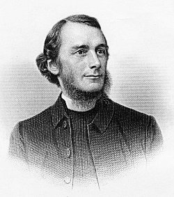
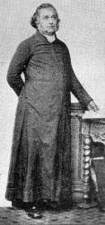

|
|
|
|
1 Stand, soldier of the cross, 2 Arise, and be baptized, 3 Thine is our country now, 4 No more thine own, but Christ's, 5 O bright the conqueror's crown, Amen. The Hymnal: revised and enlarged as adopted by the General Convention of the Protestant Episcopal Church in the United States of America in the year of our Lord 1892 |
160首 《领受圣洗歌》 |
|
https://www.zanmeishige.com/tab/13833.html?songbook=1&index=160
|
|
|
|
|

https://www.youtube.com/watch?v=hbWmaFkgP4M
| Short Name: | Edward Henry Bickersteth |
| Full Name: | Bickersteth, Edward Henry, 1825-1906 |
| Birth Year: | 1825 |
| Death Year: | 1906 |
Bickersteth, Edward Henry,

D.D., son of Edward Bickersteth, Sr. born at Islington, Jan. 1825, and educated at Trinity College, Cambridge (B.A. with honours, 1847; M.A., 1850). On taking Holy Orders in 1848, he became curate of Banningham, Norfolk, and then of Christ Church, Tunbridge Wells. His preferment to the Rectory of Hinton-Martell, in 1852, was followed by that of the Vicarage of Christ Church, Hampstead, 1855. In 1885 he became Dean of Gloucester, and the same year Bishop of Exeter. Bishop Bickersteth's works, chiefly poetical, are:—
-
(l) Poems, 1849; (2) Water
from the Well-spring, 1852; (3) The
Rock of Ages, 1858 ; (4) Commentary
on the New Testament, 1864; (5) Yesterday,
To-day, and For Ever, 1867; (6) The
Spirit of Life, 1868; (7) The Two
Brothers and other Poems, 1871; (8) The
Master's Home Call, 1872 ; (9) The
Shadowed Home and the Light Beyond, 1874; (10) The
Beef and other Parables, 1873; (11) Songs
in the House of Pilgrimage, N.D.; (12) From
Year to Year, 1883.
As an editor of hymnals, Bp. Bickersteth has also been most successful. His collections are:—
-
(1) Psalms & Hymns, 1858, based on
his father's Christian Psalmody, which passed through several editions;
(2) The Hymnal Companion, 1870; (3) The
Hymnal Companion revised and enlarged, 1876. Nos. 2
and 3, which are two editions of the same collection, have attained to
an extensive circulation. [Ch. of England Hymnody.]
About 30 of Bp. Bickersteths hymns are in common use. Of these the best and most widely known are:—" Almighty Father, hear our cry"; "Come ye yourselves apart and rest awhile"; "Father of heaven above"; "My God, my Father, dost Thou call"; "O Jesu, Saviour of the lost"; "Peace, perfect peace"; "Rest in the Lord"; "Stand, Soldier of the Cross"; " Thine, Thine, for ever"; and "Till He come.” As a poet Bp. Bickersteth is well known. His reputation as a hymn-writer has also extended far and wide. Joined with a strong grasp of his subject, true poetic feeling, a pure rhythm, there is a soothing plaintiveness and individuality in his hymns which give them a distinct character of their own. His thoughts are usually with the individual, and not with the mass: with the single soul and his God, and not with a vast multitude bowed in adoration before the Almighty. Hence, although many of his hymns are eminently suited to congregational purposes, and have attained to a wide popularity, yet his finest productions are those which are best suited for private use.
-John Julian, Dictionary of Hymnology (1907)
Tune Information
| Title: | ST. GEORGE (Gauntlett) |
| Composer: | Henry J. Gauntlett (1848) |
| Meter: | 6.6.8.6 |
| Incipit: | 34654 33211 71565 |
| Key: | B♭ Major |
| Copyright: | Public Domain |
| Short Name: | Henry J. Gauntlett |
| Full Name: | Gauntlett, Henry J. (Henry John), 1805-1876 |
| Birth Year: | 1805 |
| Death Year: | 1876 |
Henry J. Gauntlett

(b. Wellington, Shropshire, July 9, 1805; d. London, England, February 21, 1876) When he was nine years old, Henry John Gauntlett (b. Wellington, Shropshire, England, 1805; d. Kensington, London, England, 1876) became organist at his father's church in Olney, Buckinghamshire. At his father's insistence he studied law, practicing it until 1844, after which he chose to devote the rest of his life to music. He was an organist in various churches in the London area and became an important figure in the history of British pipe organs. A designer of organs for William Hill's company, Gauntlett extended the organ pedal range and in 1851 took out a patent on electric action for organs. Felix Mendelssohn chose him to play the organ part at the first performance of Elijah in Birmingham, England, in 1846. Gauntlett is said to have composed some ten thousand hymn tunes, most of which have been forgotten. Also a supporter of the use of plainchant in the church, Gauntlett published the Gregorian Hymnal of Matins and Evensong (1844).
Bert Polman
第160首 领受圣洗歌 _E．H.Bickersteth Stand, Soldier of the cross
经文：“看哪，这里有水，我受洗有什么妨碍呢?”(徒8：36)
这首圣诗是英国圣公会主教比克斯特思(E．H.Bickersteth，1825一19O6)写的。比克斯特思是圣公会福音派中提倡推广圣诗的代表人物，先后出版过《年复一年》、《昨日、今日和永远》两本创作诗集。他还编辑过一本《诗伴》，以后成为福音派中最流行的赞美诗。
他最有名的一首圣诗是《平安歌》，又称《平安，平安歌》或《十全平安歌》。它的首节是：
邪恶尘寰，何处能得平安?
主血在心中，低声诉平安!
《新编》选用了他的《领受圣洗歌》。这是一首供成年人领洗时应用的圣诗。诗中所称信徒为“十架精兵”以及“与主立约”、“主为良友”、“圣言印证”等都有圣经的根据，能被普遍接受。但对于第三节所言：“痛苦惊心记号，你当深印于额”(即在受洗者的额上划一个十字记号)可能有人对此持保留态度。然而这也是从古以来的一种传统礼仪，可以彼此尊重。
比克斯特思于1847年得剑桥大学文学士后即任牧职，同时继续深造，于185O年得硕士学位。三十年中，他历任好几个堂会的牧师，并著有《新约圣经注释》和《讲道集》多册。1885年起升任埃克塞特教区主教，19OO年因病退休。他父亲是英国圣公会牧师，曾任福音派行道会①第一任总干事。他的两个儿子后来也担任牧师和主教。
曲调名叫《圣乔治(ST.GEORGE)》，是冈特利特(H.J．Gauntlett，18O5一1876)所写。
他父母想叫他学法律当法官，他确也曾作过法官，但后来还是成了音乐家。他在幼年时就喜欢管风琴，曾与管风琴制造家一起设计过很好的管风琴。他是格列高利平咏调专家，曾写过许多赞美诗曲谱。据他自己说，一生写过一万首赞美诗曲调，有许多已失传，只有一部分收集在他的《赞美诗曲集》中。这首《圣乔治》就是其中的一首。
① 行道会(Church missionary society)，简称C．M.S，是英国较早的派遣传教士到外国去的差会组织。
https://www.xueshengshi.com/?p=7896